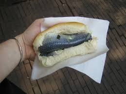

Doesn't it look yummy!

Materials needed
- 2 slices of whole grain bread
- 4 fresh sardines, cleaned and deboned
- 1 small red onion, thinly sliced
- 1 tomato, sliced
- 1 tablespoon olive oil
- 1 tablespoon lemon juice
- 1 teaspoon dried oregano
- Salt and pepper to taste
- Handful of fresh arugula leaves
Assembly Instructions:
- Toast the whole grain bread slices until golden brown.
- Place the fresh sardines on a plate and drizzle them with olive oil and lemon juice. Season with salt, pepper, and dried oregano.
- Layer the thinly sliced red onion and tomato slices on one of the toasted bread slices.
- Arrange the marinated sardines on top of the vegetables.
- Top the sardines with a handful of fresh arugula leaves.
- Place the second toasted bread slice on top to form a sandwich.
- Press down gently on the sandwich to ensure all ingredients are packed together.
- Cut the sandwich in half diagonally and serve immediately.